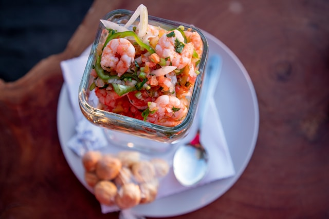

This easy ceviche is a fresh and flavorful dish that’s perfect for warm days, quick lunches, or casual gatherings.
Made with tender pieces of fresh shrimp marinated in citrus juice, it combines bright, zesty flavors with crisp
vegetables like tomatoes, onions, and peppers for a light yet satisfying bite. Fresh cilantro adds a burst of
herbaceous flavor, while the citrus creates the classic refreshing taste ceviche is known for. With simple
ingredients, minimal prep, and no complicated cooking involved, this recipe is an easy way to bring vibrant coastal
-inspired flavors to your table.